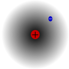

El tute es un juego de bazas. Se juega con un mazo de cuarenta cartas españolas. Pueden participar entre tres y seis jugadores. En cada mano pierde al menos un jugador. Cuando un jugador ha perdido en cuatro manos se retira del partido. El partido termina cuando quedan menos de tres jugadores (ya no se puede seguir jugando (1)).
El partido se organiza en manos. Las manos se dividen en bazas. En cada mano se reparten todas las cartas, se juegan tantas bazas como cartas se hayan repartido por jugador, se cuentan los puntos levantados y se determina quiénes pierden la mano.
La mano se divide en bazas. En la primera baza empieza tirando una carta el jugador que es mano, esa es la carta que salió. Los demás jugadores, en orden, empezando por el de la derecha del que salió, tiran una carta. El que tiró la carta que mata se lleva todas las cartas y las apila boca abajo junto a él. Ahí termina la baza. El que se llevó la baza es el que empieza tirando en la baza siguiente.
La última carta repartida indica el palo de triunfo. En cada baza mata la carta de valor más alto del palo que salió (el palo de la primera carta tirada en la baza) con excepción de que alguna de las cartas jugadas sea de triunfo. En este caso mata la carta más alta de triunfo.
Valor de las cartas: Los ases valen 11 puntos; los tres valen 10; los reyes, 4; los caballos, 3; las sotas, 2; el resto vale 0. Pero para determinar qué carta mata, el orden de las cartas sin valor es: siete, seis, cinco, cuatro y dos.
El jugador que comienza la baza puede tirar la carta que desee. Los demás jugadores deben responder al palo (jugar una carta del mismo palo que salió) y matar (tirar una carta que mate a todas las que ya fueron tiradas en la baza). De no poder cumplir estas dos obligaciones simultáneamente, debe cumplirse la primera (responder al palo), si no se puede cumplir la primera, debe cumplirse la segunda (matar, o sea, en este caso, tirar un triunfo más alto que los triunfos que se hayan tirado). De no poder cumplir ninguna de las dos, jugará cualquier carta. Aclaración: En una mano en la que no se salió con triunfos pero sí se han jugador triunfos, si el jugador al que le toca jugar no tiene cartas del palo que salió y tiene triunfos pero ninguno más alto que los jugados; no está obligado a tirar triunfo, puede tirar la carta que desee.
Si un jugador hace todas las bazas (se lleva todas las cartas de la mano), se dice que hizo capote. Pierden todos los demás jugadores. (Salvo que haya cantado, porque si cantó pierde).
Si las bazas se reparten entre dos jugadores el que haya hecho menos puntos de los dos es el que pierde la mano (se dice que el otro ganó a más).
Si las bazas se reparten entre más de dos jugadores, pierden los jugadores del medio o sea, todos los que hayan levantado cartas salvo el que haya sumado más puntos (se dice que ganó a más) y el que haya sumado menos puntos (se dice que ganó a menos). Los que no han levantado cartas no cuentan. Ejemplo, jugando cinco jugadores si sólo tres han levantado cartas pierde uno solo (el del medio), si cuatro han levantado cartas pierden dos (los del medio), si los cinco han levantado cartas pierden tres (los del medio). Así siempre se salvan uno a más y uno a menos.
El que se lleva la última baza se anota las diez de última, o sea, suma 10 puntos al valor de las cartas que haya levantado.
En la primera mano el jugador que tiene el dos de oro es mano y oro es el palo de triunfo. En las manos subsiguientes repartirá el jugador que fue mano la mano anterior y será mano el que está sentado a su derecha.
Si un jugador tiene en la mano los cuatro reyes o los cuatro caballos tiene tute. Si tiene el rey y el caballo de triunfo tiene las cuarenta. Si tiene un rey y un caballo del mismo palo tiene las veinte en ese palo.
El jugador que acaba de ganar una baza, antes de tirar la carta de la siguiente baza puede cantar, tute, las veinte o las cuarenta si aún conserva en la mano las cartas del canto (no ha jugado ninguna en la última baza ni en sus anteriores). En ningún caso es obligatorio cantar.
El jugador que canta tute gana la mano. Pierden los otros jugadores.
El jugador que canta las cuarenta tiene al final de la mano 40 puntos extra que se suman al valor de las cartas levantadas. Lo mismo para las veinte.
En un mano se pueden cantar las cuarenta y todas las veinte que se tengan pero debe hacerse una por baza. O sea, después de cada baza solo puede hacerse un canto.
Los cantos son optativos (cantan sólo los que van a más) en cambio las diez de última son obligatorias.
Si un jugador cantó las veinte o las cuarenta y luego hizo capote pierde él solo.
Cuando se juega entre tres jugadores se reparten todas las cartas menos una.
En la primera mano del partido esta carta se pone boca abajo en la mesa. El jugador que tiene el dos de oro lo cambia por la carta boca abajo sin mostrarla al resto y es mano. El dos de oro permanece boca arriba durante toda la mano y no forma parte del juego. Si nadie tiene el dos de oro, porque es la carta boca abajo, el jugador que tiene el cuatro de oro lo dice y es mano; el dos de oro se da vuelta y permanece boca arriba.
En las manos subsiguientes la última carta (la que sobra) se muestra boca arriba en la mesa. El palo de esa carta es el palo de triunfo. Si la carta es mayor a siete el jugador que tiene el siete de triunfo la cambia y luego cambia por el siete el que tiene el dos. Si la carta es menor o igual a siete y mayor a cuatro, la cambia el jugador que tiene el dos. El cuatro y el dos no se cambian. La carta que sobra permanece boca arriba durante toda la mano y no forma parte del juego.
Cuando el juego es de más de tres jugadores se reparten todas las cartas y no hay cambios. La primera mano es triunfo oro y es mano el que posea el dos. En las subsiguientes es mano el que está a la derecha del que dio, quien muestra su última carta que indica el palo de triunfo.
Cuando el juego es de seis jugadores se decide quién es mano antes de empezar el partido. El que reparte no juega esa mano y da cartas sólo para los otros cinco. El jugador que repartió no pierde en esa mano (aunque se haya cantado tute o se haya hecho capote).
En cada mano, cuando por ocurrir empate en los puntos de los jugadores no quede ningún jugador en el medio, pierden los jugadores que han empatado. Esto puede ocurrir en dos casos
Cuando todos los jugadores que han levantado cartas tienen el mismo puntaje. En este caso ninguno ha ganado a más, pierden todos los que han levantado bazas.
Cuando los jugadores que han levantado cartas han empatado o bien en el mayor puntaje o bien en el menor y no hay nadie que haya quedado en el medio. En este caso nadie ha ganado a más ni a menos. Pierden todos los que han levantado bazas.
Cuando un jugador, pudiendo cumplir con sus obligaciones de responder al palo o matar no lo haya hecho ha renunciado. Pierde la mano y se le anotan dos manos en contra (es como si hubiese perdido dos manos).
No está permitido jugar antes de tiempo, ni mostrar cartas de la mano, ni revisar las bazas levantadas (excepto la última). Tampoco está permitido dar indicaciones sobre qué cartas o palos jugar o hacer acordar que se puede cantar o salir a cortar los cantos (jugar de modo de obligar al posible tenedor de un canto a jugar una de esas cartas).
Conviniéndolo entre todos los jugadores antes de comenzar el juego pueden modificarse las siguientes reglas
Jugando de más de tres jugadores no se muestra la última carta y se considera triunfo alternativamente oro, copa, espada y basto.
En caso de empate se desempata sumándole al que es mano medio punto más, de este modo gana a más y pierde a menos. Cuando no es el mano el que empata o se empata entre más de dos, al siguiente se le suma un cuarto, al siguiente un octavo y así siguiendo.
Se puede jugar hasta que quede un ganador desempatando entre los dos últimos jugando a una variante del tute llamada tute de a dos que es similar a la brisca.
El jugador que se da cuenta que otro ha renunciado lo acusa. Si es en la mitad de la mano se la interrumpe. Se revisan las bazas que ha levantado cada uno. De no comprobarse el renuncio el jugador que acusó pierde la mano.
Los errores más comunes por desconocimiento del reglamento son los siguientes:
En el juego de más de tres jugadores considerar que pierde el segundo independientemente de la cantidad de jugadores que hayan levantado cartas. Salvo claro cuando haya habido uno solo que levantó todo en ese caso hizo capote. Jugando de esta manera los jugadores que van a menos tienen poca participación. Cuando lo que deberían hacer es, además de intentar ganar a menos, hacer que entren en baza los que todavía no entraron para que pierdan más jugadores.
Considerar que si un jugador no tiene del palo que salió ni triunfo más alto que el que se ha tirado, está obligado a tirar triunfo más chico. Esto no es así porque de esa manera no estaría cumpliendo ninguna de las dos obligaciones del tute responder al palo y matar.
El tute chancho es similar al cabrero. La principal diferencia es que si en una baza hay un rey y un caballo del mismo palo el que la levanta tiene la obligación de cantarla (las veinte o las cuarenta).
El tute de a dos es similar al cabrero. Sus diferencias son: Se juega solo a más. Pierde el que haya sumado menos puntos. Se reparten seis cartas a cada jugador, se da vuelta una indicando el triunfo y se coloca el resto del mazo sobre esta carta. Esa carta no se cambia. Al terminar cada baza los jugadores roban una carta del mazo, empezando por el que ganó la baza, para completar las seis cartas. Cuando se hayan acabado las cartas del mazo se sigue jugando con las que quedan en la mano hasta terminarse. Mientras haya cartas en el mazo no es obligatorio responder al palo ni matar.
En el tute remate cada jugador dice alternativamente cuántos
puntos es capaz de hacer jugando a más. El que dijo el número más alto
intenta cumplir su promesa y elige el palo de triunfo.
El resto trata de impedírselo. En este y otros tutes se
agrega una obligación no vale cargar. Esto es si no se puede
matar tampoco se pueden tirar cartas con valor o se debe tirar
la carta de menor valor.
El codillo es similar al remate. Pero cada jugador dice si juega o no. El primer jugador que dice juego. Elige un compañero mencionando una carta. El que tiene esa carta debe ayudarlo pero no puede comunicárselo al resto de los jugadores. Si ganan a más, ganan los dos. Caso contrario, pierden los dos.
El bato es similar al remate. Pero se reparten cuatro cartas a cada jugador y se da vuelta una carta indicando el triunfo. En el remate cada jugador dice si juega o no y después de que uno lo haya dicho el resto dice si acompaña o no. Juegan los que juegan y acompañan. El que juega está comprometido a hacer dos bazas, los que acompañan una. Después del remate y antes de jugar se pueden cambiar cartas como en el poker.
El más parecido al tute es la brisca, que también tiene muchas variantes. En la brisca todos los jugadores juegan a más y no se reparten todas las cartas al mismo tiempo. A veces se reparten en tandas (como en la escoba) a veces se van robando (como en el chinchón).
En la podrida, el bridge y el corazones no hay obligación de matar. Se juegan con un mazo de 52 cartas francesas, sin los comodines.
En la podrida o tutecillo no se reparten todas las cartas, pero las que se reparten se las reparte en el mismo momento. En la primera mano se da una carta a cada jugador, en la segunda dos, y así siguiendo hasta que se reparten todas. En cada mano cada jugador dice cuántas bazas va a levantar. Ganan los que aciertan.
El bridge es un juego de cuatro jugadores que juegan en pareja. En cada mano hay un remate.
El corazones es un juego donde se anotan en contra un punto por cada corazón levantado y 13 puntos por la Q de piques.
Última actualización 3/12/2007